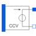

H_CCV_POLYPolynomial current controlled voltage source, like SPICE2 |

|
Information
This information is part of the Modelica Standard Library maintained by the Modelica Association.
The polynomial source is a SPICE2 model, which is also known in other SPICE derivatives.
Nonlinear current controlled voltage source. The right port voltage between pin p2 and n2 (=p2.v - n2.v) is controlled by the left port vector of currents at pin pc (=pc.i) via
p2.v - n2.v = f(pc[2].i, pc[4].i,...)
The controlling port (left) current vector is zero.
The corresponding SPICE description
Hname A1 A2 POLY(N) V1...VN P0 P1...
f is a polynomial in N variables s1...sN of the following form with M+1 coefficients a0, a1, a2,...aM.
f = a0 +
a1s1 + a2s2 + ... + aNsN +
a(N+1)s1² + a(N+2)s1s2 + ... + a(.)s1sN +
a(.)s2² + a(.)s2s3 + ... + a(.)s2sN +
a(.)s3² + s3s4 + ... + a(.)s4sN +
... +
a(.)sN² +
a(.)s1³ + a(.)s1²s2 + a(.)s1²s3 + ... + a(.)s1²sN +
a(.)s1s2² + a(.)s1s2s3 + ... + a(.)s1s2sN +
... +
a(.)sN³ + ...
The Coefficients a(.) are counted in this order. Reaching M, the particular sum is canceled.
In Modelica the controlling pins have to be connected to the CCV in that way, that the required currents flow through the according pins of the CCV:
s1 = pc[2].i, s2 = pc[4].i, s3 = pc[6].i,...
The pairs pc[1].i and pc[2].i, pc[3].i and pc[4].i...form ports with pc[2].i + pc[1].i = 0, pc[4].i + pc[3].i = 0, ...
The corresponding SPICE description of the CCV polynomial source is the following:
Hname A1 A2 POLY(N) V1...VN P0 P1...
where Hname is the name of the instance, A1 and A2 are the nodes between them the controlled voltage is gripped.
N is the number of the controlling currents, V1...VN are the voltage sources, that are necessary in SPICE to supply the controlling currents,
and P0, P1... are the coefficients that are called a0, a1, ... aM in the description of the polynomial f above.
To describe the SPICE line in Modelica, the following explanation would be useful:
Hname -> H_CCV_POLY name A1, A2 -> pins name.p2, name.p1 N -> parameter N
V1 (...VN) is declared in SPICE:
V1 V1+ V1- type of voltage source (constant, pulse, sin...)
In Modelica the currents through V1...VN has to be led through the CCV. Therefore V1...VN have to be disconnected and additional nodes
V1_AD...VN_AD
have to be added. In the case, that the SPICE source is
V1 n+ n- 0,
this source can be eliminated.
V1_AD -> name.pc[2]
V1- -> name.pc[1]
...
VN_AD -> name.pc[N]
VN- -> name.pc[N-1]
P0, P1 -> polynomial coefficients name.coeff(coeff={P0,P1,...})
Parameters (2)
| N |
Value: 1 Type: Integer Description: Number of controlling voltages |
|---|---|
| coeff |
Value: {1} Type: Real[:] Description: Coefficients of polynomial |
Connectors (3)
| p |
Type: PositivePin Description: Positive pin of the right port (potential p2.v > n2.v for positive voltage drop v2) |
|
|---|---|---|
| n |
Type: NegativePin Description: Negative pin of the right port |
|
| pc |
Type: PositivePin[2 * N] Description: Pin vector of controlling pins |